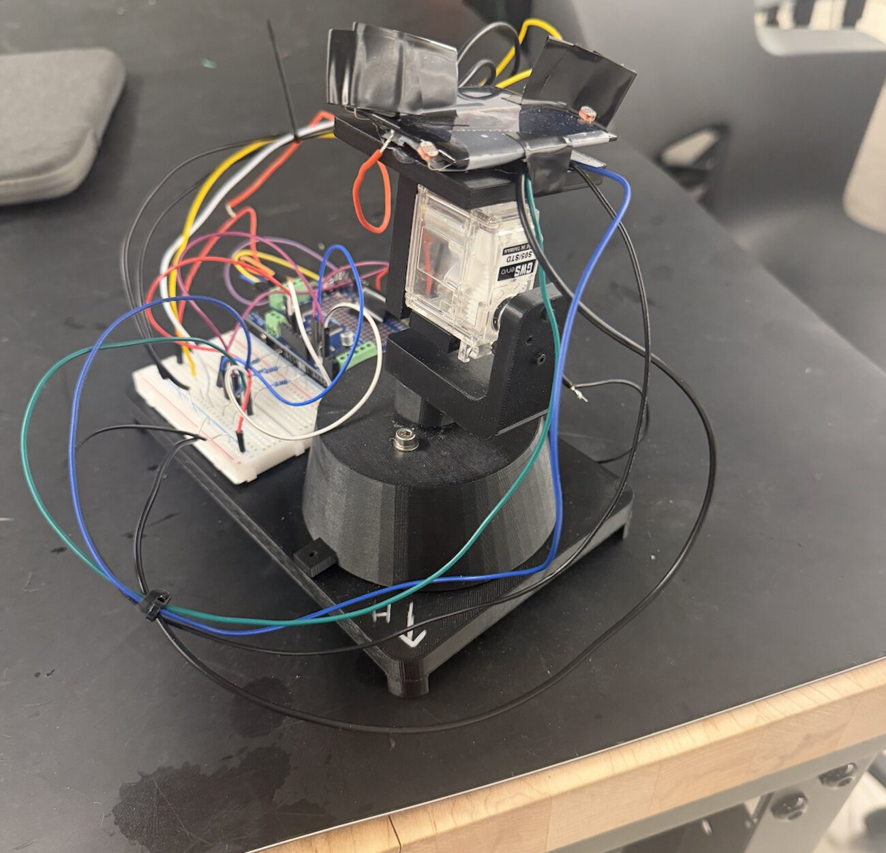
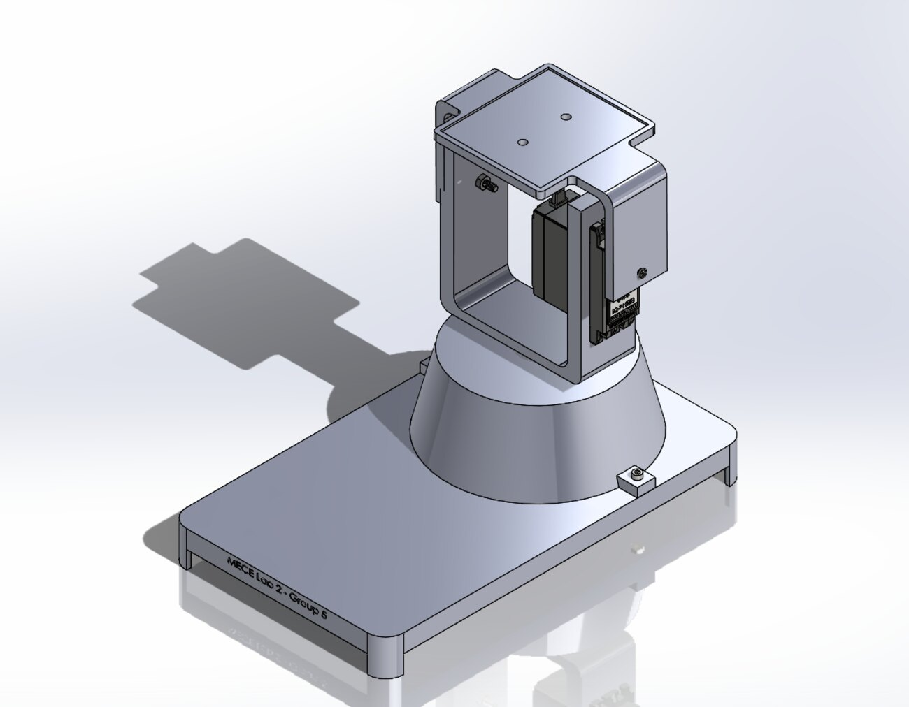
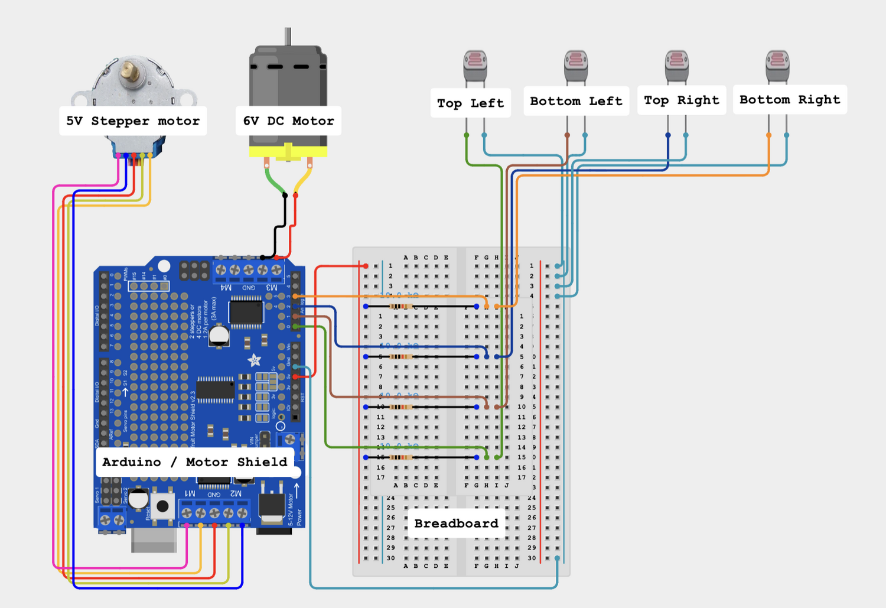
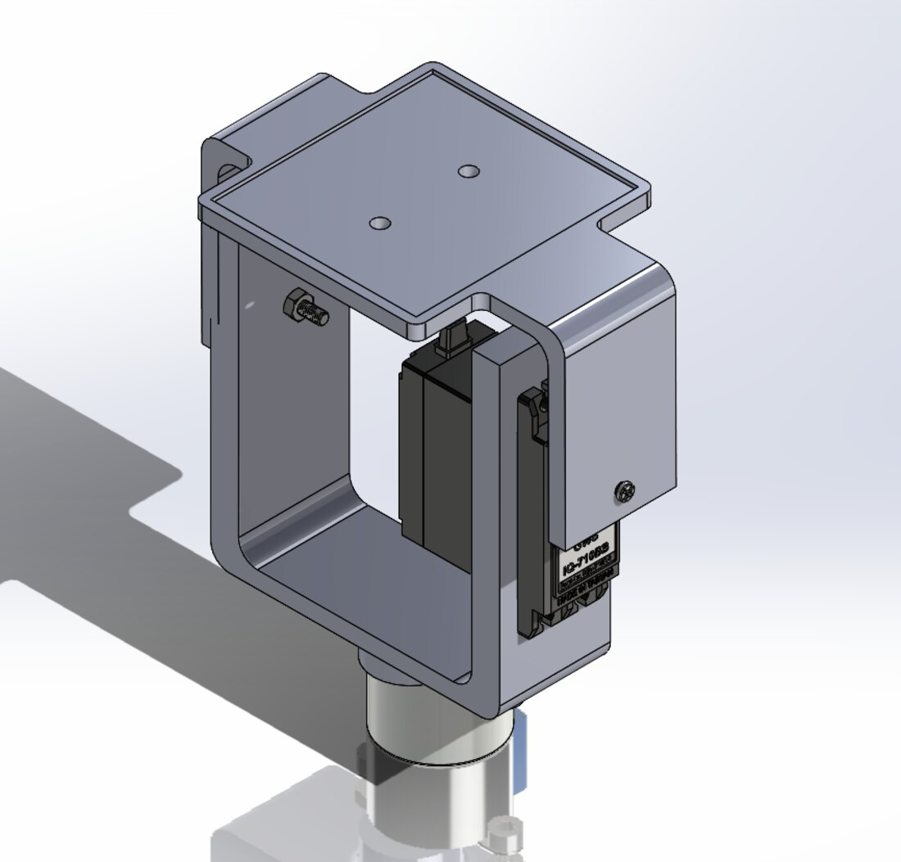
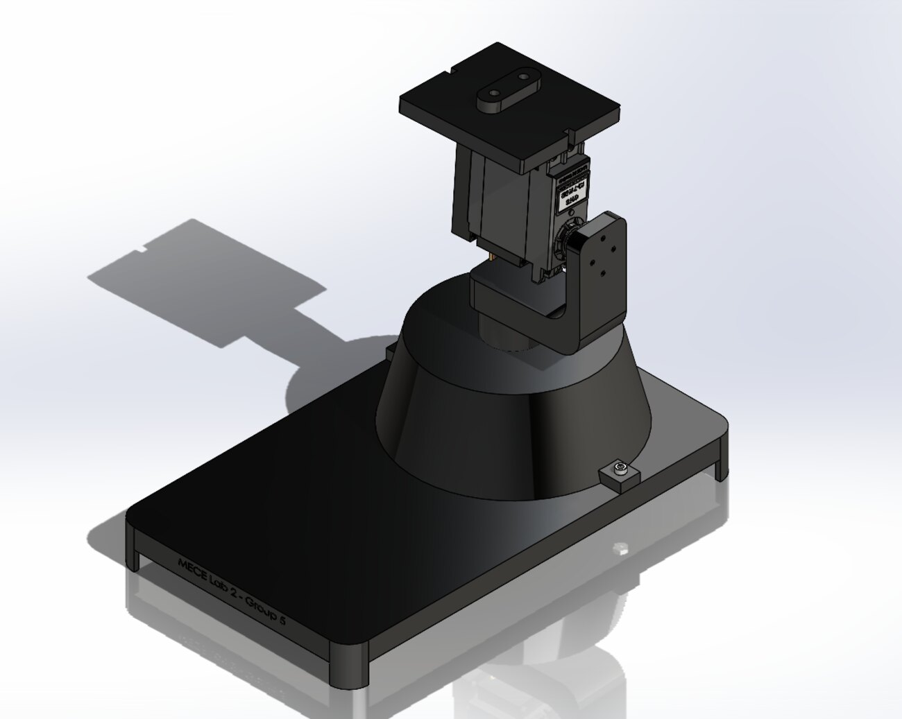

Dual-axis solar tracker
Built, tested, found unstable, and rebuilt around a different control strategy — the second design aligned to the light source in eight of nine positions.

Problem
A fixed solar panel only reaches peak output when the sun happens to sit normal to its surface. A dual-axis tracker chases that condition continuously, adjusting both altitude and azimuth. The brief was to design, build and evaluate one that stays compact and mechanically stable while covering a wide range of source positions.
First design: continuous tracking
The initial system followed the light source in real time, reading the four photoresistors and driving toward the brighter side continuously. It responded quickly, but it was heavy, constrained in its range of motion, and sensitive to sensor noise — small fluctuations in reading translated directly into motion, so the structure oscillated.


Second design: scan and sweep
Rather than tune the noise out of continuous tracking, we changed the control strategy. The revised system sweeps its full range in both axes, records light intensity across the sweep, and then moves once to the position of maximum detected illumination. Decoupling sensing from actuation removed the oscillation entirely, because the structure is no longer reacting to every fluctuation in a reading.
The mechanical design was reworked alongside it — lighter structure, better load transfer into the azimuth axis, and a more compact layout.


Results
Across nine source positions, the tracker aligned successfully in eight. Peak output was 2.65 V at an azimuth of 90° and altitude of 75° — close to the geometric optimum, which is the result that says the control logic is doing what it claims.
The failure is the informative case. At 15° altitude and 135° azimuth, incident intensity was low enough that the difference between photoresistor readings fell near the noise floor, so the sweep picked a poor maximum. That showed up as tracking error, visible mechanical jitter and reduced output voltage.
What I’d do next
A higher-torque motor on the altitude axis would cut the jitter, and stiffer structural connections would reduce the vibration that follows each move. The deeper fix for the low-intensity failure is in sensing rather than structure: averaging multiple samples per sweep position, or requiring a minimum contrast between sensors before committing to a move.
- Course
- MECE E3028 ME Laboratory II
- Dates
- Spring 2026
- Team
- 4 people
- Tools
- SolidWorks, Arduino, 3D printing